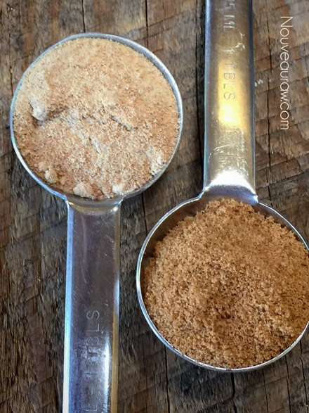
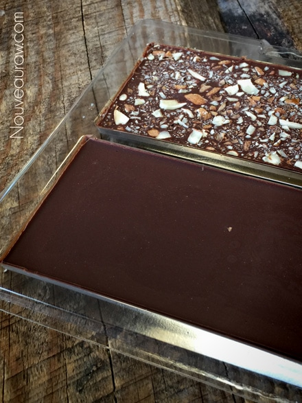
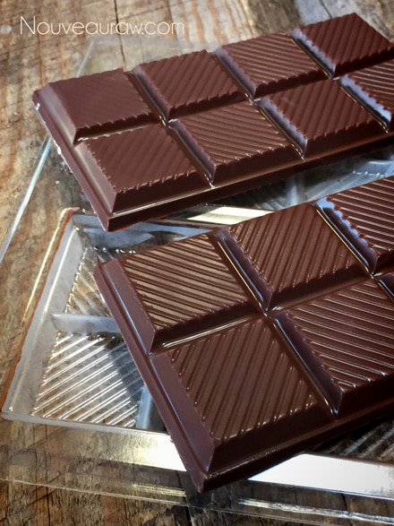
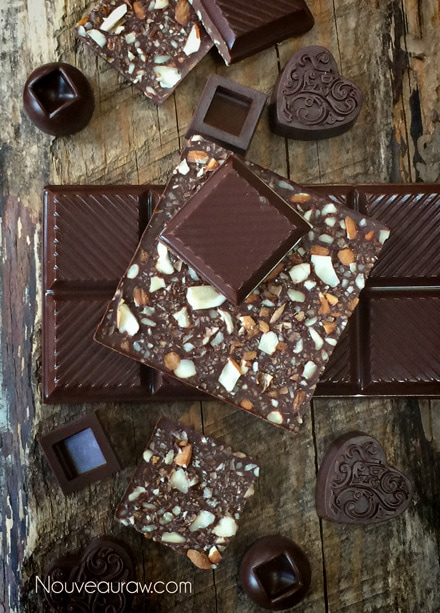
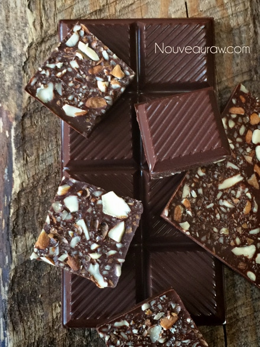

Milk Chocolate

~ raw, vegan, gluten-free, nut-free ~
This chocolate will remain hard at room temperature. But if exposed to anything above 70 degrees (F) it might start to melt so be mindful. Don’t tuck them in your pocket or place them on Great Grandma’s handmade lace doily… just in case. I don’t want the wrath of grandma to come down upon you. For presentation, I like to wrap individual chocolates like this in decorative foil wraps and store in the fridge in an airtight container.
Mise en place
Said real fast, it may seem as though I sneezed. Though I greatly appreciate the “blessing”, this is a term that I want you to become familiar with. You won’t only be using it when making chocolate; you would greatly benefit by making this part of your daily culinary experience in the kitchen. Never heard of Mise en place? It simply means “putting in place,” as in “set up” or “everything in place.” Bottom line… be prepared!
Start by tidying up the kitchen. Don’t start with a sink full of dishes and “stuff” all over the countertops. It also means to pull all the ingredients needed for the recipe out, making sure you have everything… once you start making chocolate, you really can’t stop midstream and run to the grocery store. Well, you can, I have, but trust, it breaks the flow of things. With space clean and all ingredients present… measure out the proper amount of each. Now you and your Mise en place are ready to get started.
Raw Cacao Butter
I think that we should talk about the ingredients now. Let me start by recommending that you don’t want to add the cacao butter into the blender in large chunks. This will only create more work on your end and will be taxing on the blender. The key is to grate the butter into small bits. Click (here) to learn a quick and simple way. After grating the butter come back here… don’t melt the butter. The quality of the cacao butter will make a difference. I am very picky about the raw cacao butter that I use… the best quality will give you the best results. If you already don’t have a favorite that you work with, click (here) for the brand that I use. Same goes for the raw cacao powder.
When using raw coconut crystals, it is very important to grind them to a powder before adding to the chocolate. Failure in doing this step with leave you with grainy chocolate, instead of a smooth, melt-in-your-mouth texture. I use either my spice grinder (used only for sugars) or my Magic Bullet.
Invest in a Food Scale
I highly recommend that you invest in a food scale. Making raw chocolate isn’t like most raw recipes where you can just “throw” in round-about measurements. I have provided you will weight measurement in grams and in cups… but to get the best results you will want to go by weight. Click (here) to see the one that I use. There are tons of them on the market, so shop around to find one that meets your needs, functionally and ascetically.
I used several molds for this recipe, just to give you a few ideas. I purchased the Bark Mold from Hobby Lobby for $1.99. The part # 0252 and the brand is Make n’ Mold. You can almost turn anything into a mold so don’t be boxed in with traditional looking chocolates.
I don’t recommend halving this recipe. You need the volume for the blender to properly mix everything together. I tried and hoped to save you a lot of frustration. I do hope that some of what I shared with you is helpful. Please let me know how it goes by leaving a comment below. I always love to hear from all the fans of my site. Blessings, amie sue
Preparation:
- Prepare the molds.
- You don’t need to oil the mold cavities.
- Place the molds on a large cookie sheet ahead of time. This will make it easier to transfer them. Molds can bend and wobble if you carry them alone… this could lead to a mess. Tested it… learn from me. :)
- Prepare a space in the freezer that will accommodate the cookie sheet. It must be flat.
- In a high-powered blender combine the following ingredients in this order; cacao butter, coconut crystals, vanilla protein powder, and salt.
- I highly recommend the Vitamix blender that comes with the tamper stick, which helps to push the ingredients into the blade.
- Without the tamper, you will need to stop the blender many times to scrape the sides and the base of the blender.
- If you have a “normal” blender, you will want to sift the dry ingredients before adding to the blender. This will help prevent a grainy texture.
- Turn the blender on low and work up to high, using the tamper stick to push the ingredients into the blades.
- Make sure that you keep the sides of the carafe clean of lumps and grit, especially the side with the pour spout. Failure to do so could cause the lumps to break free as you pour the warm chocolate liquid into the molds. This could make your chocolates gritty.
- You will want to blend on high for roughly 1 minute. Do not allow the temperature to reach 107 degrees (F).
- It’s important that all ingredients come up to temperature together.
- Place your hand on the side of the jug to monitor the temperature of the chocolate; once it starts getting warm, use the thermometer to take the temperature.
- Once the ingredients have turned to a liquid, with the blender still running and a vortex has been formed, remove the center lid and add the raw cacao powder, 1 tablespoon at a time.
- Blend for 30-60 seconds, making sure the cacao powder dissolves and the mixture isn’t gritty.
- Test the batter by rubbing some between two fingers. If you fill grit, keep blending.
- Pour the chocolate into the molds.
- Do not fill the cavities to the very top. Leave a fraction of an inch. If you load the cavities to the rim, it will slosh and leak out as you carry the tray to the freezer. I tested this already for you. :)
- Grab the cookie sheet that molds are sitting on and lightly tap it on the countertop. This will bring up any air bubbles within the chocolate.
- With grace and ease carry the tray to the freezer and slide it into the flat surface that you prepared.
- Shut the door, say a prayer (not that you need too, just good practice), and check your chocolates in about 15 minutes. The thicker the molds are, the longer it will take to freeze all the way through.
- Once the chocolate is fully set up, turn the mold over and tap the corner on the countertop. The candies should drop.
- If you used silicone molds, just pop them out by pressing on the back of the mold.
- These chocolates are not tempered, that is another process that takes much more attention to detail. But these will be firm and delicious!
- The least amount of times you handle them, the better. Your fingers prints will get all over them unless you wear a pair of cotton gloves. They make those for chocolatiers.
- Clean up tip – there is no doubt that chocolate is messy. To help speed up the process of cleaning the blender, add a few drops of dish soap and fill it halfway with hot water. Blend on high till the sides clean off.
Remember when I talked about powdering the raw coconut
crystals? I wanted to show you the difference in texture. The
photo on the left has been powdered, and the spoon on the right
hasn’t. This makes a big difference in the texture.





© AmieSue.com